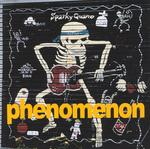

| Artist: | Sparky Quano |
| Title: | Phenomenon |
| Label: | Spark Music Management |
| Length(s): | 31 minutes |
| Year(s) of release: | 2004 |
| Month of review: | [12/2004] |
| 1) | Sparky Fly Upward | 6.49 |
| 2) | Phenomenon | 6.02 |
| 3) | Longing For JS | 5.09 |
| 4) | Force Major | 6.16 |
| 5) | Black Hole | 6.40 |
Phenomenon has a rather bouncy first half, full of percussive sounds and less focus on the guitar sound. Halfway though a terribly noisy guitar sets in as a backdrop. Less enticing this one. Longing For JS opens intimately with very high notes, and some very low once serve as bass. Then the pace goes up and we arrive at something that has some resemblances to Heon. This track has some nice melodic material, all played quite repetitively.
Force Major on the other hand, reintroduces the beat and some fast fingers. The gait is a rather slow one, while the sounds Quano produces are quite weird. Later the noise guitar sets in again.
Black Hole is a track in the vein of the opener, a recognizable theme and Quano improvising/varying on it. It does have a spacey feel, something you'd expect, but not always get, with a title like this. Think Ozric.